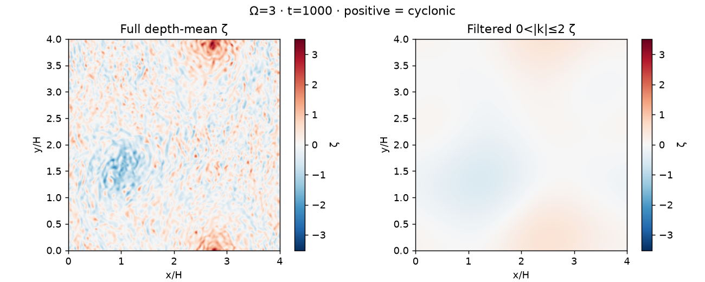
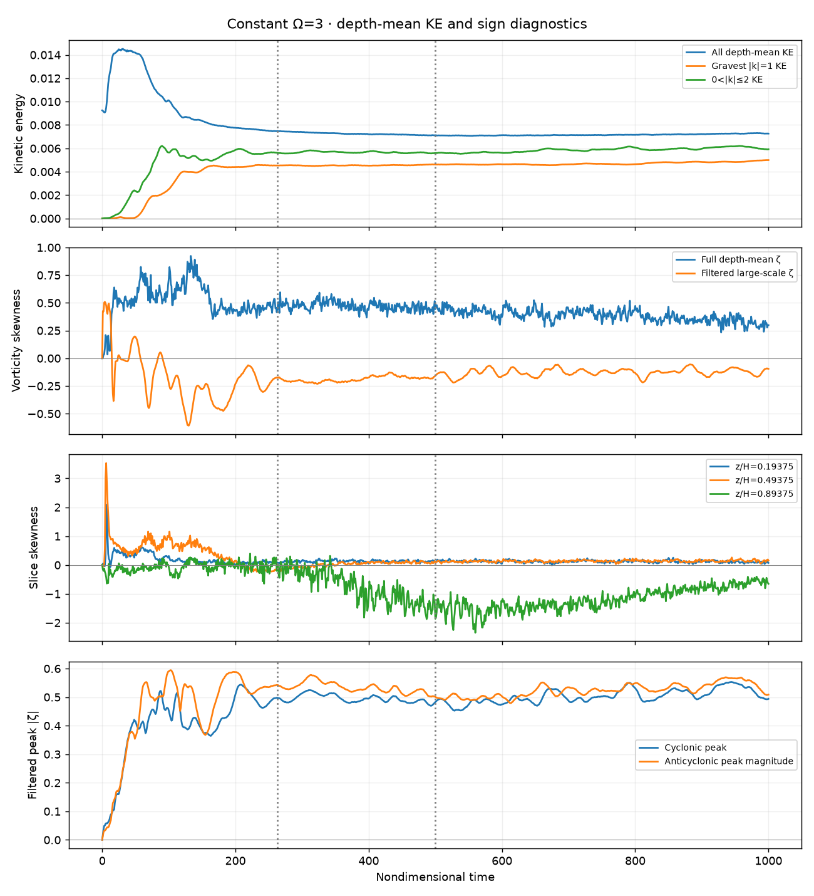
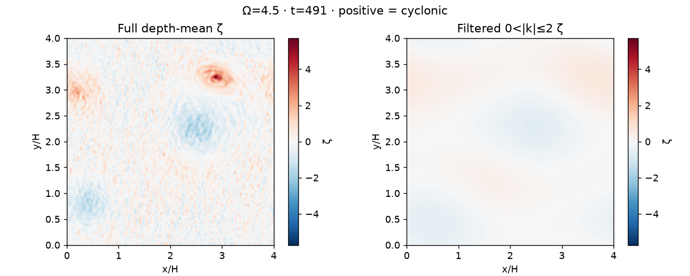
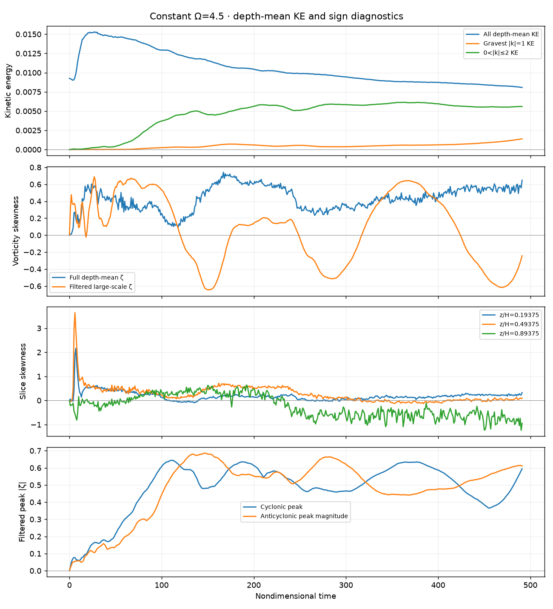

Unity · fixed Ω=3 and Ω=4.5 · saved evolution
Ω=3 reached t=1000 and retains a broad anticyclonic region together with a compact cyclone; the cyclone straddling the top and bottom edges is one structure across the periodic boundary. Its filtered anticyclonic enstrophy share is about 52% over t=950–1000, compared with 53% over t=450–500, so this diagnostic does not show increasing anticyclonic dominance. Ω=4.5 has a stronger large-scale anticyclonic bias over the matched t=441–491 window (59%, versus 53% at Ω=3), while retaining multiple structures of both signs. Neither case establishes a single anticyclonic LSV or a robust rotation-driven sign transition.
← Gallery landing page · Earlier Ω=3 through t=500 · Full analysis and display provenance
Reached its target t=1000. Rotation stays fixed throughout. Time is nondimensional, not Earth days.
Top: ζ/f (positive = cyclonic). Bottom: absolute tracer concentration. Columns: z/H=0.19375, 0.49375, 0.89375. Fixed scales shared by both movies and all times; every integer-time frame at 10 frames/s.
Final gravest-mode share of density-weighted depth-mean KE: 68.8%. Final total depth-mean KE / its initial value: 78.6%. These quantify occupancy of the largest scales, not inverse energy flux. Here depth-mean vorticity is the curl of the density-weighted depth-mean horizontal velocity; it is not a closed depth-integrated vorticity budget.

Full and filtered depth-mean vorticity with common signed limits within this figure. Filtering retains 0<|k|≤2 in box-mode units; it is not an individual vortex tracker.

| Time window | Full mean ζ skew | Filtered ζ skew | Cyclonic peak | Anticyclonic peak magnitude | Anticyclonic share of filtered enstrophy |
|---|---|---|---|---|---|
| 213-263 | 0.457 | -0.187 | 0.492 | 0.530 | 52.8% |
| 441-491 | 0.456 | -0.173 | 0.485 | 0.517 | 52.8% |
| 450-500 | 0.452 | -0.175 | 0.482 | 0.513 | 52.9% |
| 700-750 | 0.414 | -0.128 | 0.493 | 0.522 | 51.9% |
| 950-1000 | 0.314 | -0.121 | 0.521 | 0.545 | 52.0% |
Window averages from one realization. Peak measures refer to the filtered field; enstrophy share is Σ(ζ² for ζ<0)/Σζ². Results depend on filtering, and do not establish vortex identity or ensemble sign preference.
Stopped cleanly at the configured wall-time limit, t=491.5065, short of target t=500. Final checkpoint retained; movie ends at the last integer-time saved frame, t=491. Rotation stays fixed throughout. Time is nondimensional, not Earth days.
Top: ζ/f (positive = cyclonic). Bottom: absolute tracer concentration. Columns: z/H=0.19375, 0.49375, 0.89375. Fixed scales shared by both movies and all times; every integer-time frame at 10 frames/s.
Final gravest-mode share of density-weighted depth-mean KE: 17.3%. Final total depth-mean KE / its initial value: 87.3%. These quantify occupancy of the largest scales, not inverse energy flux. Here depth-mean vorticity is the curl of the density-weighted depth-mean horizontal velocity; it is not a closed depth-integrated vorticity budget.

Full and filtered depth-mean vorticity with common signed limits within this figure. Filtering retains 0<|k|≤2 in box-mode units; it is not an individual vortex tracker.

| Time window | Full mean ζ skew | Filtered ζ skew | Cyclonic peak | Anticyclonic peak magnitude | Anticyclonic share of filtered enstrophy |
|---|---|---|---|---|---|
| 213-263 | 0.465 | 0.053 | 0.528 | 0.549 | 48.7% |
| 441-491 | 0.551 | -0.496 | 0.433 | 0.577 | 58.9% |
Window averages from one realization. Peak measures refer to the filtered field; enstrophy share is Σ(ζ² for ζ<0)/Σζ². Results depend on filtering, and do not establish vortex identity or ensemble sign preference.
Both runs use 256×256×80 cells in a periodic 4×4×1 box, impermeable stress-free top and bottom, the same finite-amplitude mixed-sign initial velocity field (RMS 0.136), bottom heating, upper cooling/cap, transport and dissipation. Ω=4.5 began independently at t=0 with thermodynamics balanced for its rotation. Ω=3 continued its own checkpoints. No β, imposed shear or rotation ramp.
The common late-time comparison is t=441–491. Ω=3 additionally reaches t=1000. Different rotation requires different initial pressure/density balance, so this is not a comparison with identical thermodynamic fields. These are exploratory seeded runs, with one realization per rotation and no resolution-convergence claim.
| Run | Valid budget interval | Energy defect | Net external heat | Defect / heat |
|---|---|---|---|---|
| Ω=3 | 500.5–1000 | -44.121 | 248.149 | -17.8% |
| Ω=4.5 | 0–491.5 | -29.649 | 245.638 | -12.1% |
The old Ω=3 manual restart sample at t=263.06682088232816 was invalid and is excluded, as documented previously. The new continuation has no manual stale sample; its budget begins at the first refreshed diagnostic, t=500.5. The Ω=4.5 budget begins at t=0. These budget intervals differ and must not be treated as matched energetic comparisons.
Both movies were rendered and fully decoded on Unity. Saved-field spectra reproduce logged depth-mean kinetic energy within 10⁻⁶ relative tolerance; mass conservation and finite-state checks passed. Raw fields remained on Unity.
Analysis/rendering source · Ω=3 continuation source · Ω=4.5 source